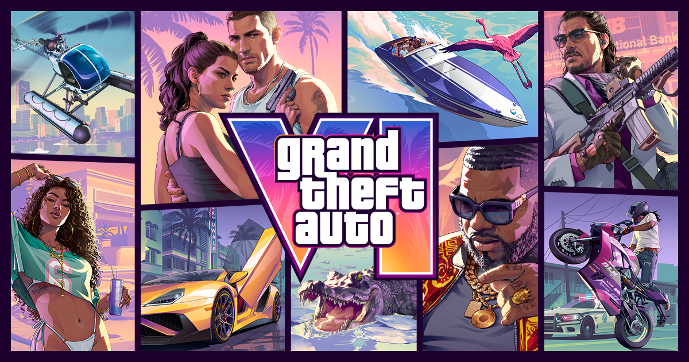

GTA 6's first update is live — and it fixes the autosave bug that was eating players' progress
Rockstar has started rolling out GTA 6 update 1.002.002, the game's first patch since launch — fixing broken autosaves, crashes, stuck weather, and story-blocking phone calls on PS5 and Xbox Series X|S.

Disclosure: this post contains affiliate links. I earn a commission on qualifying purchases.
Four days after launch, Grand Theft Auto VI has its first patch. Rockstar Games began rolling out update 1.002.002 on Monday, November 23, for PlayStation 5 and Xbox Series X|S — a stability-focused fix for the bugs players have been running into since the game unlocked on November 19.
It is a small patch with a big headline fix. The autosave was not working correctly for some players, which meant progress could vanish between sessions. That is the kind of bug that turns a launch-week triumph into a support-ticket avalanche, and Rockstar moved on it within four days.
What the patch fixes
Rockstar published the full patch notes with the rollout. The update addresses seven issues:
• Fixed several issues that caused the game to crash
• Fixed an issue that resulted in the weather not changing for extended periods
• Fixed an issue that resulted in the game not autosaving correctly
• Fixed several issues that resulted in phone calls not triggering correctly, including those that progressed the story or unlocked mission content
• Fixed an issue that resulted in the player being unable to lose their Wanted Level
• Fixed an issue that resulted in the player being unable to use the deadlift bar in the Gym
• Fixed an issue that resulted in partners not handing over bags so that players could sell them to fences
The phone-call fix matters as much as the autosave one. Missed calls in GTA 6 are not flavor — some of them gate story missions and unlockable content, so a call that never triggers can quietly stall a playthrough with no obvious cause. The Wanted Level fix is the same kind of trap: a player who cannot shake the cops cannot get back to the open-world wandering that is half the game.
Size and rollout
The patch is rolling out in phases rather than landing for everyone at once. On PlayStation 5 it weighs roughly 604 MB, while the Xbox download runs about 1.6 GB. Dataminers tracking the rollout reported that about a third of players could download it in the first wave, with the rest following over the next several hours.
One thing the patch does not touch, at least according to early player reports: the money glitch. Players have confirmed it still works after updating, so the unofficial economy of Leonida survives Rockstar's first round of fixes.
A launch that needed a fast fix
The speed of the patch makes sense when you look at the scale of the launch it follows. GTA 6 sold an estimated 44.9 million copies in its first weekend — more than $4 billion in four days — which means even a bug that hits a small fraction of players is hitting hundreds of thousands of people. A broken autosave at that scale is not a footnote; it is the first thing a studio fixes.
The patch notes are deliberately narrow. There is no new content here, no balance pass, no Online tease — just the crashes and progression blockers that showed up once tens of millions of people started playing at the same time. That is the right order of operations for a game this size: stop the bleeding first, then build on it.
Sources: GTA 6 Gets First Update Following Release, Full Patch Notes Revealed (ComicBook) · Rockstar releases new GTA 6 update fixing crashes and several annoying bugs (TrueAchievements) · GTA 6 PS5 Update 1.002.002 Rolling Out Now (PlayStation LifeStyle) · GTA 6 New Update Releasing in Phases; Size Revealed (Insider Gaming)
Watch
Source: Grand Theft Auto VI Launch Trailer (Rockstar Games) — the official launch trailer, released October 15, 2026, 90 seconds of in-game footage captured on PS5, set to Justice's "Flower in a Hurricane."
Gear up: Razer — mice, keyboards, headsets and laptops.